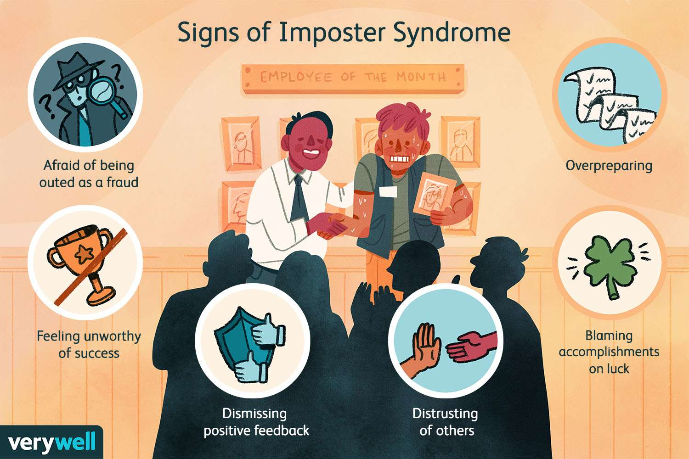

Imposter Syndrome
Imposter Syndrome
Intro and Its Importance
Signs of I.S.
I.S. Types
Support and Coping Strategies
Resources
What are signs of Imposter Syndrome?
Click on one of the following choices
a. Afraid of being outed as a fraud
b. Feeling unworthy of success
c. Dismissing positive feedback
d. Distrusting of others
e. Blaming accomplishments on luck
f. Overpreparing
g. All of the Above
